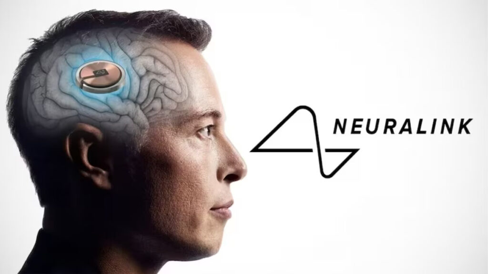

เป้าหมายในอนาคต
ถ้าผมทำได้ อยากทำงานร่วมกับ Neuralink เพื่อเชื่อมต่อสมองมหนุษย์กับคอมพิวเตอร์ เพื่อสร้างโลกเสมือนให้มนุษย์ไปสัมผัสได้ หรือการบันทึกข้อมูลเข้าสมองโดยตรงเพราะผมเป็นคนขี้เกียจเรียน>:Dและผมเชื่อว่าหลายคนก็เป็นเหมือนกันและทุกคนก็จะไม่จำเป็นต้องเรียนหนักอีกต่อไป